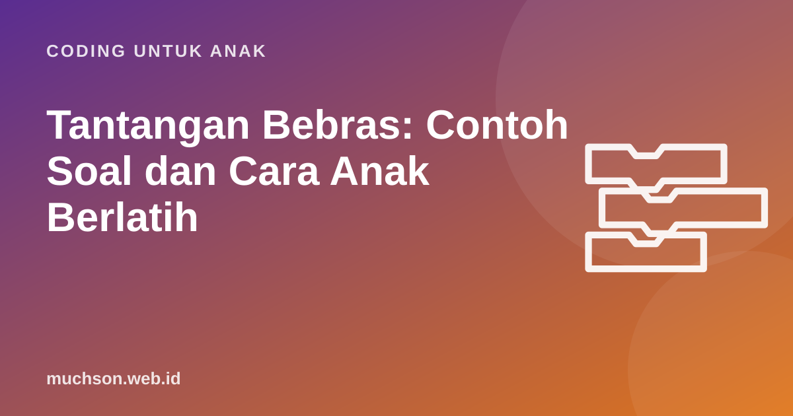

Beranda › Artikel › Coding untuk Anak
Coding untuk AnakTantangan Bebras: Contoh Soal dan Cara Anak Berlatih
Tantangan Bebras adalah kompetisi berpikir komputasional yang soalnya berupa teka-teki menarik, tanpa perlu bisa memprogram. Di Indonesia, tantangan ini diikuti siswa dari SD sampai SMA. Artikel ini menjelaskan apa itu Bebras, memberi contoh soal bergaya Bebras dengan pembahasannya, dan cara berlatih di rumah.

Apa itu Bebras?
Bebras berasal dari Lituania, digagas oleh Profesor Valentina Dagienė pada 2004. "Bebras" berarti berang-berang dalam bahasa Lituania, hewan yang dikenal pekerja keras dan cerdik. Kini Bebras menjadi inisiatif internasional yang diikuti puluhan negara. Indonesia mulai mengikuti Tantangan Bebras pada 2016, dikoordinasikan oleh Tim Olimpiade Komputer Indonesia (TOKI) bersama biro-biro Bebras di berbagai perguruan tinggi, dengan tujuan memperkenalkan berpikir komputasional kepada siswa dan guru.
Soal Bebras dirancang supaya bisa dikerjakan tanpa pengetahuan pemrograman atau informatika sebelumnya. Yang diuji adalah cara berpikir: menemukan pola, mengikuti aturan, menyusun langkah, dan memilih strategi terbaik. Soal biasanya dibungkus cerita tentang berang-berang yang membuatnya menyenangkan.
| Kategori di Indonesia | Jenjang |
|---|---|
| Sikecil | SD kelas bawah |
| Siaga | SD kelas atas |
| Penggalang | SMP/MTs |
| Penegak | SMA/SMK/MA |
Jadwal, kategori, dan cara mendaftar dapat berubah setiap tahun, dan pendaftaran umumnya melalui sekolah. Cek situs resmi Bebras Indonesia untuk informasi terbaru.
Contoh soal 1: Bendungan berang-berang (urutan)
Soal berikut dibuat untuk artikel ini dengan gaya Bebras, bukan soal resmi.
Berang-berang membangun bendungan dari 4 jenis bahan. Aturannya: batu harus paling bawah; ranting di atas batu; daun tidak boleh langsung di atas batu; lumpur paling atas. Bagaimana urutan dari bawah ke atas?
Contoh soal 2: Robot berang-berang (algoritma)
Robot berang-berang hanya mengerti perintah maju, belok kiri, dan belok kanan. Ia harus mengambil kayu (💎) lalu menuju bendungan (🏁). Bisakah kamu menemukan program terpendek?
Contoh soal 3: Kode warna (pola dan representasi)
Berang-berang mengirim pesan dengan lampu: merah = 1, biru = 0. Nilai setiap posisi dari kanan adalah 1, 2, 4, 8. Pesan "merah, biru, merah, merah" berarti angka berapa?
Contoh soal 4: Antrean makan (logika)
Empat berang-berang antre: Ana, Bimo, Cici, Dodo. Ana tidak di paling depan. Bimo tepat di belakang Cici. Dodo di paling belakang. Siapa yang paling depan?
Strategi mengerjakan soal Bebras
- Baca cerita sampai habis, lalu garis bawahi aturannya.
- Gambar. Coret-coretan di kertas membantu, terutama untuk soal urutan dan peta.
- Coba satu kemungkinan, cek dengan semua aturan, lalu perbaiki.
- Eliminasi pilihan yang jelas melanggar aturan.
- Jangan terpaku. Lewati soal yang terlalu lama, kembali bila ada waktu.
Cara berlatih di rumah
- Soal-soal tahun sebelumnya. Bebras Indonesia dan biro-biro Bebras di berbagai kampus menerbitkan kumpulan soal latihan.
- Permainan logika seperti sudoku anak, teka-teki silang angka, dan permainan papan strategi.
- Coding visual. Membuat program di Scratch melatih pola pikir yang sama: aturan, urutan, dan uji coba.
- Bahas, bukan hanya menjawab. Setelah soal selesai, minta anak menjelaskan kenapa jawabannya benar.
Bebras paling bermanfaat bila dijadikan pengalaman menyenangkan, bukan beban lomba. Anak yang terbiasa memecahkan teka-teki dan menyusun program akan merasa soal Bebras seperti permainan. Untuk latihan rutin bergaya puzzle, level-level Robo di PixelKode bisa dicoba gratis di dua pelajaran pertama.